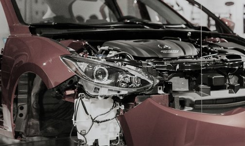
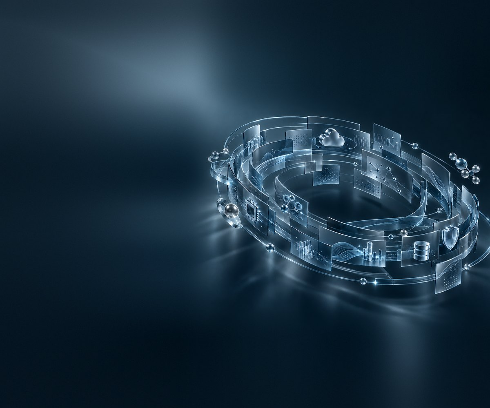
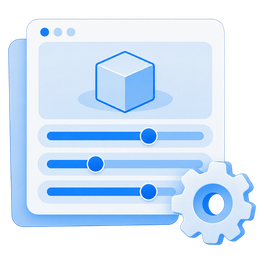
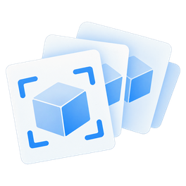

CorePal美國汽車零件辨識
CorePal 的回收汽車零件多達 500 類，人工拍攝標註耗時，也難涵蓋各種角度與光線。透過 Corvus 以 3D 檔生成多角度、多光源的訓練影像並自動標註，邊緣裝置即時辨識準確率達 90% 以上。

上傳 OBJ 3D 檔，即可自動生成物件辨識 AI 模型。
你是否也遇到這些困擾？
需要外包或專人處理，時間與成本都難以控制。
不良品樣本稀少，模型學不會辨識真正重要的問題。
等到樣品出來才開始蒐集資料，AI 永遠追不上產品上市的速度。
Corvus 視覺辨識模型建置平台
不需要 3D 渲染經驗，不需要撰寫程式，Corvus 幫你產出影像資料集，以及可使用的辨識模型。



CASE STUDIES

CorePal 的回收汽車零件多達 500 類，人工拍攝標註耗時，也難涵蓋各種角度與光線。透過 Corvus 以 3D 檔生成多角度、多光源的訓練影像並自動標註，邊緣裝置即時辨識準確率達 90% 以上。
太陽能場的熱斑、裂痕等缺陷零散分布，人工巡檢耗時，罕見缺陷影像也難收集。NXP 以場域 3D 掃描為基礎，透過 Corvus 生成不同天候與光線下的可見光與熱影像缺陷資料，訓練巡檢模型。